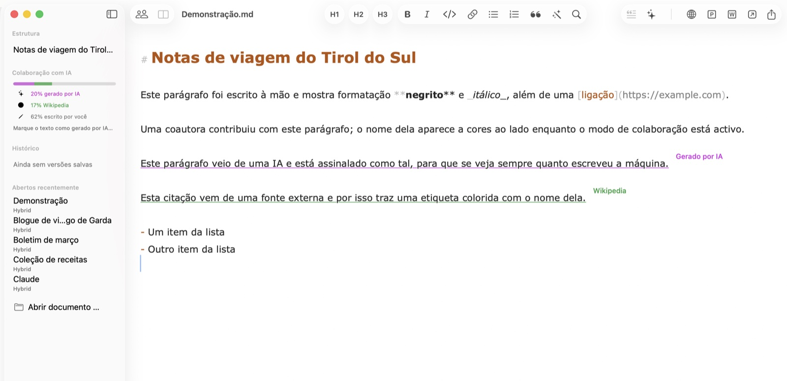
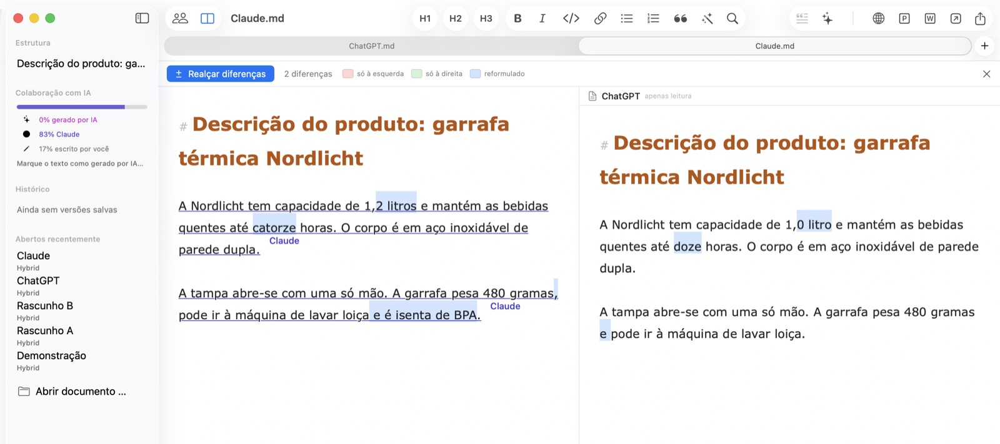
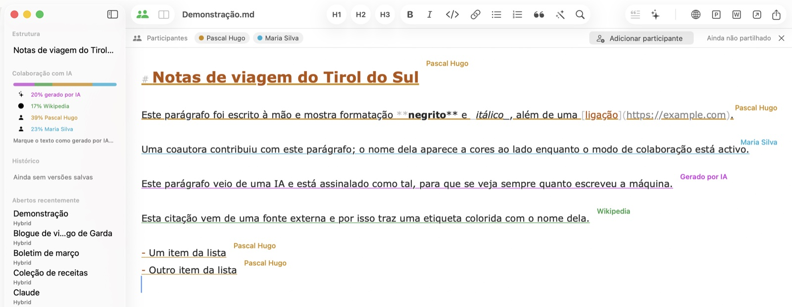
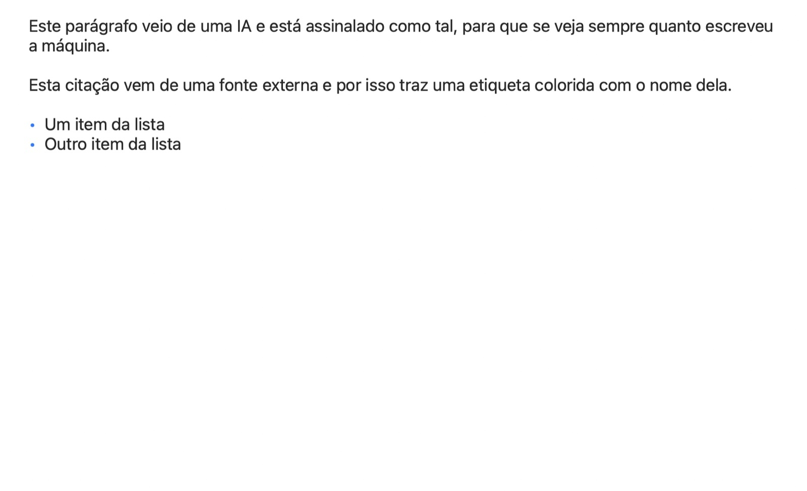

Publicação online com um clique
Copia o documento como HTML formatado com imagens incorporadas — pronto a colar no WordPress e noutros CMS. As imagens aparecem exatamente no seu lugar, sem links partidos.
Hybrid para macOS
O Hybrid regista de onde vem cada passagem: escrita por si, gerada por uma IA, citada de uma fonte com nome ou contribuída por um colega. Feito para quem publica — em PR, marketing, agências e redações.
Em breve O Hybrid chega em breve ao iPhone e ao iPad.

Cada passagem carrega a sua origem — e mantém-na ao guardar, partilhar e editar em conjunto. O registo viaja dentro de um ficheiro .md normal que qualquer outro editor pode abrir; as etiquetas flutuam sobre o texto e não aparecem em nenhuma exportação.
Este parágrafo foi escrito por si — tudo o que digita conta automaticamente como seu.
Esta passagem veio de uma IA e está marcada, para que a parte da máquina continue visível.Gerado por IA
Esta citação vem de uma fonte externa e traz o nome dela como pequena etiqueta.Wikipédia
A promessa central: o que alguém contribuiu continua atribuído a essa pessoa — mesmo que o acesso seja retirado mais tarde. A proveniência regista quem escreveu, não quem tem permissão agora.
A mesma pergunta foi feita a duas ferramentas de IA e, à primeira vista, as respostas parecem iguais. O Hybrid realça exatamente onde diferem e conta as diferenças. Atribua a cada resposta o nome da sua ferramenta como fonte: mesmo depois de as fundir, continua a saber que frase veio de qual.

Convide participantes por ligação, a partir dos Contactos, por Mail ou Mensagens — o documento permanece exclusivamente no seu iCloud. Os convidados escrevem em direto: cada passagem traz o nome e a cor do seu autor e, enquanto alguém escreve, o seu nome aparece com pontos pulsantes. Os convidados não podem exportar o documento nem guardá-lo como ficheiro próprio — pertence ao proprietário.

Títulos, listas, tabelas reais e imagens incorporadas, renderizados como os seus leitores os verão. A pré-visualização acompanha a escrita ao vivo — numa janela própria ou como vista dividida ao lado do editor; ideal para rever um texto antes de ir para o CMS.

Copia o documento como HTML formatado com imagens incorporadas — pronto a colar no WordPress e noutros CMS. As imagens aparecem exatamente no seu lugar, sem links partidos.
Envie o seu texto com um clique para o ChatGPT, Claude, Perplexity ou uma app à sua escolha. Marque passagens de IA e leia a parte de cada participante na barra lateral.
Os documentos são puros ficheiros .md que qualquer editor pode abrir. Tudo o que o Hybrid sabe a mais — proveniência, versões, autores — viaja num único comentário invisível.
Arraste uma foto para o texto: é redimensionada, convertida e referenciada em Markdown. Um ficheiro CSV ou Excel torna-se uma tabela formatada.
O Hybrid guarda estados intermédios enquanto escreve; cada estado pode ser visto e restaurado. O histórico vive no seu iCloud, não no ficheiro — os documentos que partilha não contêm versões antigas.
Bloqueie a app de imediato ou automaticamente após inatividade. Bloqueado é bloqueado: janelas ocultas, exportações desativadas — até o Touch ID voltar a abrir.
Onde quer que um texto nasça de várias mãos — humanas e de máquina —, o Hybrid mantém as origens separadas.
Redija comunicados de imprensa com apoio de IA mantendo cada citação verificável. Quando perguntarem o que um humano escreveu, o seu documento tem a resposta — transparência como método, não como remendo.
Muitas mãos, uma só voz. Veja a parte de cada um, compare rascunhos lado a lado e entregue HTML limpo a qualquer CMS — todo o fluxo de conteúdos no seu Mac.
Separe as suas palavras das fontes e das sugestões da IA. As fontes com nome ficam ligadas a cada parágrafo — através de revisões, versões e edição partilhada.
Relatórios coescritos com IA precisam de um rasto auditável. O Hybrid regista quem — ou o quê — escreveu cada passagem, e o bloqueio Touch ID mantém fechados os rascunhos confidenciais.
Compare resultados de modelos lado a lado, meça a parte de IA de um documento e guarde prompts e resultados como Markdown limpo — legível em qualquer ferramenta.
Do Markdown ao CMS com um clique: HTML formatado com as imagens exatamente onde pertencem. E ainda exportação para PDF, Word e Markdown puro.
O Hybrid chega em breve ao iOS. Os mesmos documentos, a mesma proveniência — no bolso. Até lá, os seus ficheiros são Markdown puro no iCloud Drive, legíveis em qualquer dispositivo.
O Hybrid está disponível em nove idiomas: português, inglês, alemão, francês, espanhol, italiano, neerlandês, japonês e chinês simplificado — e este site também.
Hybrid para Mac — o editor Markdown para pessoas, IA e tudo o que publica.
macOS 13 (Ventura) ou posterior · Apple Silicon & Intel